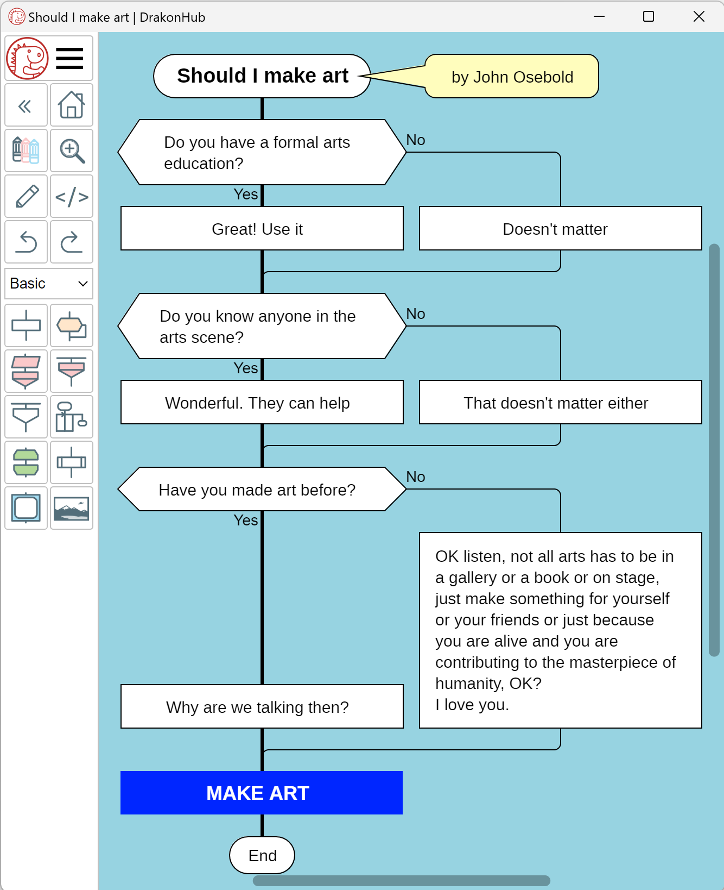

DrakonHub for Desktop
DrakonHub is a cross-platform diagram editor for creating Drakon flowcharts and mind maps. Designed for clarity and simplicity, it enables users to visualize ideas, processes, and workflows effectively.
DrakonHub adheres to aerospace industry standards, ensuring your diagrams are clear and easy to understand.

Make artificial intelligence write code for you
With DrakonHub, you can generate prompts from flowcharts for AI applications such as ChatGPT, Copilot, and Gemini. Just make a human-readable flowchart and click the "Pseudocode" button.
DrakonHub is a diagram editor for creating flowcharts and structured mind maps.
How to Use the App
- Tap "+Document".
- Tap "Drakon Flowchart".
- Add elements using the toolbar: tap a primitive button on the toolbar. Yellow circles will appear. Tap one of the circles.
- Double-click or long-tap any block to edit its text.
- Use the </> button on the toolbar to generate an AI prompt from the diagram.
On touchscreen, scroll and zoom using two-finger gestures.
With the mouse, press and hold the mouse wheel to scroll.